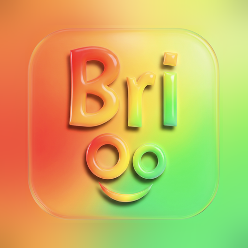

Soutenir Brioo
Brioo est et restera gratuit et sans publicité, pour que chaque élève de Guinée ait les mêmes chances de réussir le CEE, le BEPC et le Bac, même sans connexion Internet.
Parents, enseignants, anciens élèves, membres de la diaspora : si Brioo vous est utile et que vous souhaitez encourager le projet, un don libre par Orange Money est le bienvenu.
Orange Money+224 622 32 74 18
Entièrement facultatif : toutes les leçons restent gratuites pour tout le monde.
À quoi sert votre soutien ?
- écrire et vérifier de nouvelles leçons et de nouveaux exercices ;
- faire fonctionner le tuteur qui explique aux élèves ;
- faire connaître Brioo dans les écoles de toute la Guinée.
Merci du fond du cœur. — Sayon Idovic Loua, fondateur de Brioo